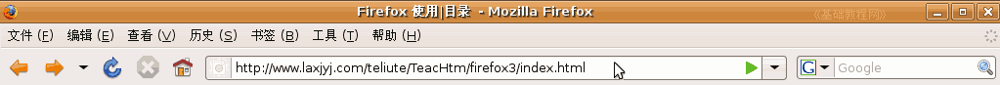
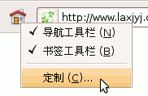
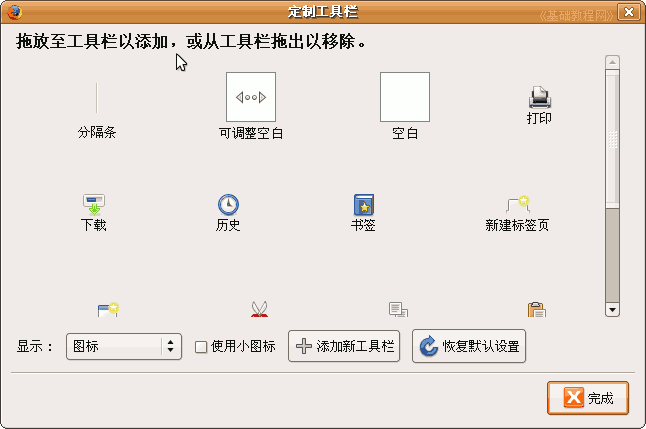
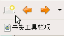
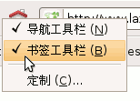

Firefox3 基础教程
作者：TeliuTe 来源：基础教程网
六、设置工具栏 返回目录 下一课工具栏是菜单下面的按钮区域，常见的后退、前进、刷新按钮等，
中间的长条是地址栏，输入新网址后，右边的绿色三角是转到按钮，右边是Google搜索框，也可以点下拉按钮换成百度；

1、设置工具栏
1）在工具栏的“小房子”图标那儿点右键，选“定制”命令，出来一个定制面板；

2）面板上面有一行黑粗体文字，提示拖动按钮到工具栏上即可，也可以拖回来再；

3）把面板右边的一个“新建标签页”按钮，拖到工具栏最左边，如果已经有了就不用拖了；

4）再在工具栏上点右键，把第二个勾“书签工具栏”点一下去掉勾；

5）如果浏览器地方比较小，可以把下面的“使用小图标”勾上，这样工具栏图标都是小的；
点“完成”返回，其他的按钮也可以自己试着添加和删除；
本节学习了基本操作，如果你成功地完成了练习，请继续学习下一课内容；本教程由86团学校TeliuTe制作|著作权所有
基础教程网：http://teliute.org
美丽的校园……
转载和引用本站内容，请保留版权信息和本站链接。